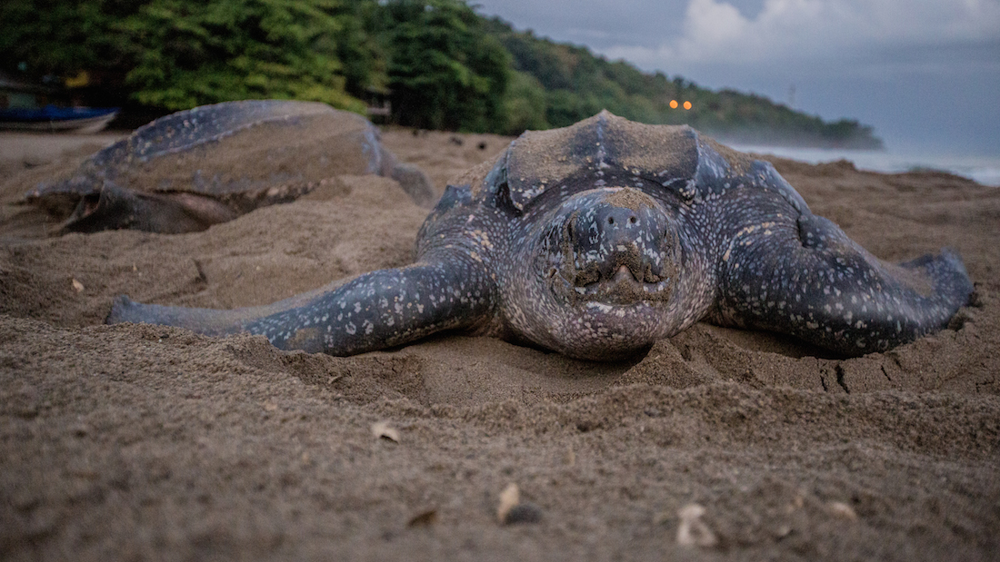

Leatherback sea turtles are the largest turtle in the world. They have the widest global distribution of any reptile. Leatherback sea turtles can dive up to 4,000 feet, deeper than most marine mammals.
Leatherback sea turtles have existed in largely the same form since their relatives first evolved alongside dinosaurs 110 million years ago during the Cretaceous period. They are in a different genus than other living sea turtle species, which have bony shells compared to the leatherback's oily flesh and leather-like skin.
 Ecology